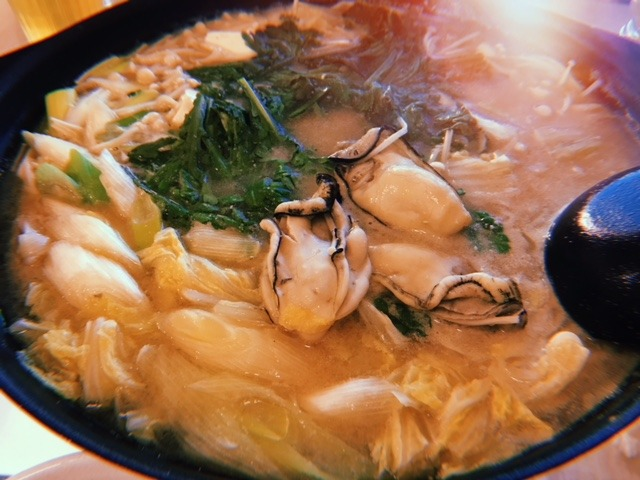
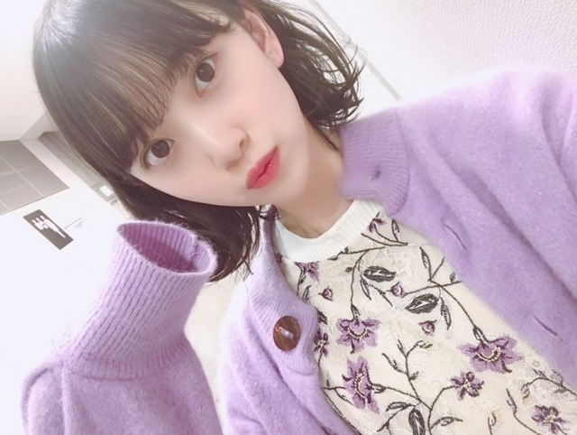
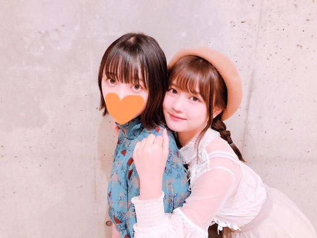

2018/1105Monマフラーまみれ
おうちで、猟奇的な彼女を観ました！
飛鳥の、あの頃きみを追いかけた
もやっと観れました〜☺︎
飛鳥、終始可愛かったし
なんか素で笑ってるのかなって思う
シーンが何回かあって
飛鳥〜〜〜って心の中で叫んでました笑
映画の撮影頑張ってたもんね
お疲れ様！

いたずらしてくるこの子は誰だ！☺︎
最近は、牡蠣鍋を食べました

鍋がだいすきなので
いろんなレパートリーの鍋を
作れるようになりたいなぁ
冬といえば、鍋ですね！
定期的に観たくなる映画 ドラマ
ぼくは明日昨日のきみとデートする
渇き。
海街diary
魔女の宅急便
ヘイフラワーとキルトシュー
バイオハザードシリーズ
失恋ショコラティエ
逃げるは恥だが役に立つ
パパとムスメの7日間
みなさんはありますかー？

今週の金曜日はMUSICSTATIONに
出させていただきます☺︎
みてください

かわいいれの☺︎
今度ゆっくりお話ししようね〜
では！

2018/11/05 21:00
コメント(448)
ブログ更新ありがとうーーー！
飛鳥の映画見たいけど近くでやってないんだよねー笑笑
今回もかわいいなーーーーー笑
飛鳥の映画見たいけど近くでやってないんだよねー笑笑
今回もかわいいなーーーーー笑
未央奈ちゃんブログ更新ありがとう！
イタズラしてるのは絢音ちゃんかなー？
未央奈ちゃんのオススメしてる物を見ようと思います！！
Mステ楽しみにしてます
イタズラしてるのは絢音ちゃんかなー？
未央奈ちゃんのオススメしてる物を見ようと思います！！
Mステ楽しみにしてます
未央奈ちゃんのショートヘアーマジで可愛いです
牡蠣って、ちゃんと食べた事ないかも。
なかなか食べる機会もないですし。
定期的に観る映画といえば。
ワイルドスピードシリーズ。
他にもありますけど。
あとはアニメですかね。
なかなか食べる機会もないですし。
定期的に観る映画といえば。
ワイルドスピードシリーズ。
他にもありますけど。
あとはアニメですかね。
失恋ショコラティエいいですよね！
僕は嵐ファンでもあるので名前が出たことが嬉しいです！
僕は嵐ファンでもあるので名前が出たことが嬉しいです！
未央奈ちゃんブログ更新ありがと！
新制服可愛いね！
パープルはもともと乃木坂カラーではあるけど最近未央奈ちゃんがよくパープルの服着てるイメージあるから「未央奈ちゃんっぽい！」って思った。
僕が定期的に見返すのは映画だったら「ゴッドファーザー」とか、40～50年代のアメリカが舞台の映画。その時期のアメリカの風景が大好きで浸りたくなるんだ。
ドラマは香取慎吾さん主演の「薔薇のない花屋」が大好きで定期的に見返してるよ。
もし見たことかったら絶対みてほしい！
すごくいい話だよ。
未央奈ちゃんが好きな映画やドラマもちゃんとチェックするね～！
大好き‼️
新制服可愛いね！
パープルはもともと乃木坂カラーではあるけど最近未央奈ちゃんがよくパープルの服着てるイメージあるから「未央奈ちゃんっぽい！」って思った。
僕が定期的に見返すのは映画だったら「ゴッドファーザー」とか、40～50年代のアメリカが舞台の映画。その時期のアメリカの風景が大好きで浸りたくなるんだ。
ドラマは香取慎吾さん主演の「薔薇のない花屋」が大好きで定期的に見返してるよ。
もし見たことかったら絶対みてほしい！
すごくいい話だよ。
未央奈ちゃんが好きな映画やドラマもちゃんとチェックするね～！
大好き‼️
未央奈のショート可愛すぎて
ショートにしたーい！！
冬は何故か短くしたくなる癖なんとかしたいぃ
未央奈の映画も楽しみだな〜！！
鍋美味しい時期だね〜
食の秋だけどダイエットしてるから我慢…
カロリーゼロが最近お友達。
ばいぃ
未央奈ブログ更新ありがとー！笑
夜はめっちゃ寒いから鍋で温まりたいよね〜笑
牡蠣鍋とても美味しそうだね！
食べてみたいな〜笑
俺はバイオハザードの映画が観たいな〜笑
あの頃の君を追いかけたはまだ観れてないんよね〜
観たいな〜笑
最近は寒いから風邪ひかないようにねー！
未央奈大好き！
夜はめっちゃ寒いから鍋で温まりたいよね〜笑
牡蠣鍋とても美味しそうだね！
食べてみたいな〜笑
俺はバイオハザードの映画が観たいな〜笑
あの頃の君を追いかけたはまだ観れてないんよね〜
観たいな〜笑
最近は寒いから風邪ひかないようにねー！
未央奈大好き！
阿部寛の結婚できない男は何回見ても面白い
ブログ更新ありがとう〜
未央奈の映画も凄い楽しみだよ〜
Mステ楽しみにしてるね〜
未央奈の映画も凄い楽しみだよ〜
Mステ楽しみにしてるね〜
君の膵臓をたべたい！！！
今日の夕飯鍋だった！
未央奈！
さすが！えいがみ様！
風邪ひかないで頑張って！
さすが！えいがみ様！
風邪ひかないで頑張って！
ブログ更新ありがとー(*ˊᵕˋ)੭
定期的に見たくなる映画、ドラマ、、
マイ☆ボス マイ☆ヒーロー、コード・ブルー、ホタルノヒカリ、花より男子、SPEC、結婚できない男、トリック、君の膵臓をたべたい、砂時計etc…かなー
ほぼドラマだけど笑笑
定期的に見たくなる映画、ドラマ、、
マイ☆ボス マイ☆ヒーロー、コード・ブルー、ホタルノヒカリ、花より男子、SPEC、結婚できない男、トリック、君の膵臓をたべたい、砂時計etc…かなー
ほぼドラマだけど笑笑
だいすき
未央奈ちゃんおつかれ！
寒くなってきたから鍋食べながら映画観たい！
ホットギミック楽しみですね♪
寒くなってきたから鍋食べながら映画観たい！
ホットギミック楽しみですね♪
みおーなー
鍋の季節だね。
牡蠣と言えばこの間、牡蠣のパスタ美味しかったよ。
ドラマは海外のだけどウォーキングデッド見ています。Mステ見るねー。
牡蠣と言えばこの間、牡蠣のパスタ美味しかったよ。
ドラマは海外のだけどウォーキングデッド見ています。Mステ見るねー。
ブログ更新ありがとう〜。元気でました！
未央奈プラグ更新ありがとー
大好きだよ
ぼくは明日昨日のきみとデートする面白いよね
大好きだよ
ぼくは明日昨日のきみとデートする面白いよね
牡蠣鍋美味そう
お疲れ様です！
僕は定期的に見たくなる漫画ならあります
飛鳥の映画ももう一回見たいです！
僕は定期的に見たくなる漫画ならあります
飛鳥の映画ももう一回見たいです！
年中可愛いです！ずっと応援してます！
鍋食べたいね～
牡蠣鍋めっちゃ好き！
キムチ鍋とか～
しゃぶしゃぶとか～
豆乳鍋もいいな～
すき焼きも！
ご当地鍋みたいなのも食べてみたい！
きりたんぽとか石狩鍋とか
岐阜にはご当地鍋みたいなのあるかな？
とにかく寒いところ行って温かい鍋を食べたい。
定期的に見たくなるものか～
ドラマとか映画はあまり見ないけど、ジブリは時々見たくなるかな～
あと、箱根駅伝の時期が近づいてくると『風が強く吹いている』を見たくなる
って書いてたら見たくなってきた(笑)
だいたいそんな感じ～
では✋
てんちょ
牡蠣鍋めっちゃ好き！
キムチ鍋とか～
しゃぶしゃぶとか～
豆乳鍋もいいな～
すき焼きも！
ご当地鍋みたいなのも食べてみたい！
きりたんぽとか石狩鍋とか
岐阜にはご当地鍋みたいなのあるかな？
とにかく寒いところ行って温かい鍋を食べたい。
定期的に見たくなるものか～
ドラマとか映画はあまり見ないけど、ジブリは時々見たくなるかな～
あと、箱根駅伝の時期が近づいてくると『風が強く吹いている』を見たくなる
って書いてたら見たくなってきた(笑)
だいたいそんな感じ～
では✋
てんちょ
ブログ更新ありがとうー
牡蠣鍋美味しそう、俺はもつ鍋食べたんだ！！
絶対Mステ見るよ
12月の握手会楽しみ
牡蠣鍋美味しそう、俺はもつ鍋食べたんだ！！
絶対Mステ見るよ
12月の握手会楽しみ
好きです。
未央奈を見ると毎日元気が出ます！
ブログ更新ありがとうございます。
Mステ見るよ
みおな
大好きです
Mステ見るよ
みおな
大好きです
私もパパとムスメの7日間大好きです！！
未央奈ちゃんブログ更新ありがとう！
鍋といったらすき焼きが大好き〜
生卵と絡み合う肉がたまらんよね！
映画だと、「エール！」っていうフランス映画がオススメ！
是非観てください！
体調に気を付けて頑張ってください！
鍋といったらすき焼きが大好き〜
生卵と絡み合う肉がたまらんよね！
映画だと、「エール！」っていうフランス映画がオススメ！
是非観てください！
体調に気を付けて頑張ってください！
ブログ更新ありがとう〜！
写真の可愛い未央奈大好きです♡
12月15日と1月14日と2月3日と全握行きます!!!!!!!
写真の可愛い未央奈大好きです♡
12月15日と1月14日と2月3日と全握行きます!!!!!!!
定期的に観るドラマは
ブザービート
プロポーズ大作戦
踊る大捜査線
映画は
ハリーポッター
君に読む物語
君の名は
などなど
ブザービート
プロポーズ大作戦
踊る大捜査線
映画は
ハリーポッター
君に読む物語
君の名は
などなど
ブログ更新ありがとう〜！
写真の可愛い未央奈大好きです♡
12月15日と1月14日と2月3日と全握行きます!!!!!!!
写真の可愛い未央奈大好きです♡
12月15日と1月14日と2月3日と全握行きます!!!!!!!
金曜日楽しみ！
みおちゃんブログ更新ありがとう！
キミオイのあすかちゃんすな感じがあってやばかったよねー。笑
次はみおちゃんのホットギミックだねー！
楽しみで仕方ないよー！
魔女の宅急便
恋するヴァンパイア
HUNTER
死神くん
とか見たいなー。笑
キミオイのあすかちゃんすな感じがあってやばかったよねー。笑
次はみおちゃんのホットギミックだねー！
楽しみで仕方ないよー！
魔女の宅急便
恋するヴァンパイア
HUNTER
死神くん
とか見たいなー。笑
こんばんは。
映画 鍋いいですね。
映画 鍋いいですね。
ブログ更新ありがとー！
君追い僕も見ました！飛鳥さん可愛かったですな〜！堀さんの映画もすごい楽しみです！
鍋いいですよね〜僕はミルフィーユ鍋が食べたい〜友達の家でつつく鍋が最高です。
定期的に見たくなる映画はカリオストロの城ですかね笑
Mステ！楽しみです！見ますね〜！可愛い写真ありがとうございます！元気でました！ではでは。
君追い僕も見ました！飛鳥さん可愛かったですな〜！堀さんの映画もすごい楽しみです！
鍋いいですよね〜僕はミルフィーユ鍋が食べたい〜友達の家でつつく鍋が最高です。
定期的に見たくなる映画はカリオストロの城ですかね笑
Mステ！楽しみです！見ますね〜！可愛い写真ありがとうございます！元気でました！ではでは。
未央奈ブログありがと！
私は今、中学聖日記にどハマりしてます ♀️
未央奈きゃわわわわわ〜大好き
私は今、中学聖日記にどハマりしてます ♀️
未央奈きゃわわわわわ〜大好き
お疲れ様、
可愛い
ぼくは明日昨日のきみとデートする
確かに良かったね〜
切ないSFっていいよね〜
あと、ワシ的には、
ベタだけど、
バック・トウ・ザ・フューチャーや
ニューシネマパラダイス
スタンドバイミー
が、めっちゃすっきゃねん♪
ドラマだと、
旬なシリーズだと、
下町ロケット
あと、一周しての
掟上今日子の備忘録
優しい時間
なんかが、心地よいかな♪
以上の中で一つでも
観ていないのがあったら
是非是非、観てちょんまげ♡
あと、関係ないけど
鍋と云えば、子供の頃に
なんで、かあさんは夜鍋しながら
手袋を編んでくれるんかな？
って、疑問に思わんかった？
ん？ワシだけ？？
。。。。
まっいっか〜笑笑
では、
次に会えるのはいつだっけ？
ま、その時まで、元気でいてちょんまげ♡
おやすみおな〜♪
いい夢みおな〜☆
わたる⊿
みおな可愛い！
ブログ更新ありがとう ✨可愛い画像ありがとう ✨定期的に観たいもの☺️
君の膵臓を食べたい
君の名は堀未央奈の笑顔
君の膵臓を食べたい
君の名は堀未央奈の笑顔
可愛い！！！
観たい映画。
エレファントマン
オルカ
特にエレファントマンは観た方が良い映画です。
エレファントマン
オルカ
特にエレファントマンは観た方が良い映画です。
ブログ更新ありがとう
ジブリ作品は時々見たくなるなぁ
Mステ楽しみです
ホットギミックの公開待ち遠しいなぁ
ジブリ作品は時々見たくなるなぁ
Mステ楽しみです
ホットギミックの公開待ち遠しいなぁ
未央奈ブログ更新ありがとう！
飛鳥のキミオイ超可愛かったよね！俺も見てておお！ってなった(笑笑)
牡丹鍋美味しそう〜！俺も久々に食べたいなぁ〜
Mステ絶対見るよ！帰り道の初披露？かな？？超楽しみ！
最近寒い日が多いけど体調は崩さないようにね〜
飛鳥のキミオイ超可愛かったよね！俺も見てておお！ってなった(笑笑)
牡丹鍋美味しそう〜！俺も久々に食べたいなぁ〜
Mステ絶対見るよ！帰り道の初披露？かな？？超楽しみ！
最近寒い日が多いけど体調は崩さないようにね〜
堀ちゃん、今晩は。
牡蠣鍋、美味しそうですね。
牡蠣は嫌いだけど、牡蠣鍋は好きです。
『僕は明日、昨日のきみとデートする』は原作を読んでから観るのがオススメです。
DVDも原作も持ってます。
牡蠣鍋、美味しそうですね。
牡蠣は嫌いだけど、牡蠣鍋は好きです。
『僕は明日、昨日のきみとデートする』は原作を読んでから観るのがオススメです。
DVDも原作も持ってます。
なんでいつもそんなに可愛いんですか？反則ですよ笑笑


やっぱりショートの方が個人的に好きです。
これからも頑張ってください。